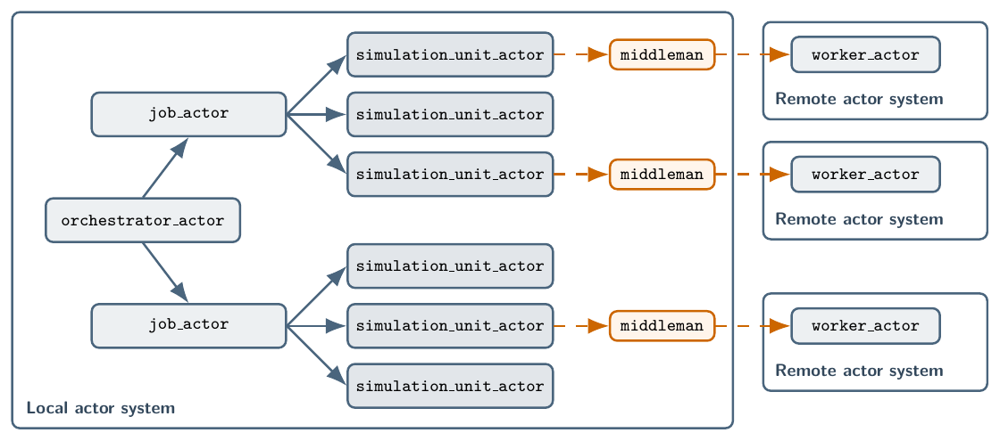
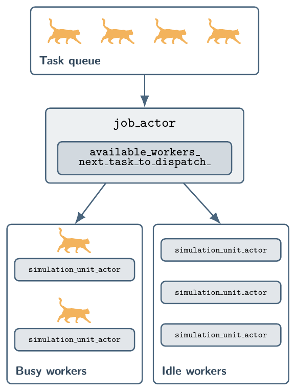

Architecture¶
Orchestration model¶
MIAOW executes simulation workflows through an actor hierarchy inspired by SUMMA-Actors (Klenk and Spiteri, 2024), as illustrated in the figure below:
{kind=link}

A typical workflow includes the following steps:
Caller invokes
Runtime::submit_job(task),Runtime::submit_job(tasks), orRuntime::submit_job(tasks, std::move(job_controller)). In the third overload,job_controllerhas typestd::unique_ptr<JobController>, andRuntimetakes ownership of the controller. The controller’s role is to generate additional tasks after each task completes, and it can inspect all completed task records to determine what new tasks to generate.Runtime assigns a
job_idand sends the tasks and job controller toorchestrator_actor.orchestrator_actorspawns onejob_actorfor that job. The job actor owns the controller and task vector and creates enough reusablesimulation_unit_actorworkers for the initial tasks, up toRuntimeOptions::max_workers_.The
job_actorgreedily dispatches tasks to availablesimulation_unit_actorworkers.Each worker resolves
Task::simulation_unit_id_, constructs a newSimulationUnit, executes the task, and returns aTaskResultto the job actor.After each task execution returns a successful or failed
TaskResult, thejob_actorcreates itsTaskRecord, passes all completed task records to its controller, appends tasks returned by the controller’sgenerate_new_tasks()method to its task vector, adds workers if needed, and returns to step 4. This continues until no tasks are waiting or running.Completed
TaskRecordvalues are sorted byTaskIdand stored in oneJobRecord.Runtime fulfils the caller’s
JobHandlefuture.
The following figure illustrates the task scheduling process managed by the job_actor in steps 4 through 6 of the above workflow, where the orange cat icons represent tasks:
{kind=link}

When the controller generates new tasks, the job actor counts entries in its task vector that do not yet have a corresponding completed task record and adds workers only if this count exceeds the existing worker count. Workers are not removed while the job is running, so the job retains the largest worker count that has been required at any point during the job, capped by RuntimeOptions::max_workers_, until the job completes or shuts down. Idle simulation_unit_actor workers do not occupy CAF scheduler threads, so retaining them does not reduce scheduler capacity.
Simulation unit execution¶
Task::simulation_unit_id_ selects the complete execution implementation. SimulationUnitRegistry::add<SimulationUnitType>(...) registers a unit constructed and executed in the parent process, while SimulationUnitRegistry::add_subprocess(executable, lifetime) registers an internal SimulationUnit implementation that delegates each task to the supplied executable. Tasks contain no separate execution-location or subprocess-deployment fields.
Every simulation_unit_actor constructs the selected polymorphic SimulationUnit and calls execute(task). In-process units registered using SimulationUnitRegistry::add<SimulationUnitType>(...) return an immediate TaskResult or CAF error. A subprocess unit returns a delegated CAF response while its actor-owned state starts or reuses the child, sends the serialized Task, receives TaskResult, and completes required cleanup without blocking a parent scheduler thread. The child executable implements the Task to TaskResult contract through run_subprocess_worker() and does not receive the parent registry.
SubprocessLifetime::single_task starts one child for a task and stops and reaps it before delivering the result. SubprocessLifetime::persistent retains a child only after a successful task. An idle persistent child remains alive and retains its process resources, but MIAOW does not reserve a dedicated CPU core for it. The same idle simulation_unit_actor reuses that child only when the next task selects a persistent registration with exactly the same executable string and the child actor remains available. A failure, timeout, single-task registration, different executable, child termination, or worker shutdown prevents reuse. Failures and task timeouts preserve subprocess diagnostics and stop and reap the child before completing the delegated response.
Custom subprocess executables¶
The following setup registers the exact executable path and uses the returned SimulationUnitId when constructing a task:
miaow::SimulationUnitRegistry registry;
const miaow::SimulationUnitId custom_unit =
registry.add_subprocess("/path/to/my_worker",
miaow::SubprocessLifetime::persistent);
const miaow::Task task{custom_unit, "input"};
The parent registry supplies the polymorphic SubprocessSimulationUnit. The selected executable links against MIAOW and implements the task contract by supplying any synchronous callable that accepts const Task& and returns TaskResult:
#include <miaow.hpp>
miaow::TaskResult execute_task(const miaow::Task&) {
return {miaow::TaskStatus::succeeded, "custom task completed"};
}
int main(int argc, char* argv[]) {
return miaow::run_subprocess_worker(argc, argv, execute_task);
}
The executable’s main() must pass its supplied argc and argv to run_subprocess_worker() unchanged because MIAOW uses those arguments for parent registration. Custom configuration travels in Task rather than additional command-line arguments. The worker invokes the handler serially once per received task; a persistent subprocess may invoke the same handler object for multiple tasks. An exception from the handler becomes a failed TaskResult.
Limitations¶
Although subprocess execution is currently supported using remote actors, MIAOW does not currently support distributed-memory parallelism across multiple nodes. This is a planned feature for future releases.
Microsoft Windows is not currently supported, and there are no immediate plans to support it. MIAOW has been tested on Linux and macOS, and future releases will continue to support these platforms.